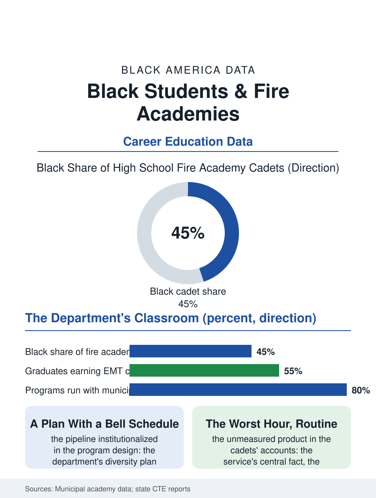

Black Education
The Department's Classroom: Black Students and Fire Academies
The firehouse's own classroom, the diversity plan written as a high school, graded by the element itself. The fire academy file.

The fire and EMS academy brings the firehouse into the high school: the cadet program whose graduates leave with the EMT certification and the fire academy's first modules banked, in a pipeline aimed directly at the fire service's composition problem, and enrolling Black students in the urban districts at the levels the service itself has not reached. This article reads the fire academy file.
The Cadet's Ladder
The model's structure is the department's own: the academy school or the magnet program run with the municipal fire department as the partner, the instructors being the department's officers in the classroom and the station as the lab, the curriculum delivering the EMT-Basic certification inside the high school years and the fire science credits articulated into the community college's degree and the department's academy in sequence, so that the graduate's path to the badge is shortened by the years the traditional candidate spends discovering it. The physical and the academic files are taught as the service's own gates from the first semester, the candidate physical ability test's events trained as the physical education of the program, a transparency about the standard that the traditional recruiting's hopeful obscurity never offered. The enrollment's demographics in the urban academies are the file's point: the classes run substantially Black in the cities that built them for that stated purpose, the department's diversity plan written as a high school. The station's culture is the program's hidden curriculum in the cadets' accounts, the kitchen table's hierarchy and the bunk room's humor and the house's chores absorbed at the age when the traditional recruit meets them as an adult stranger, so that the academy graduate arrives at the department's own academy as a native of a culture the other candidates are still visiting, an advantage no examination measures and every officer recognizes. The EMS file's weight in the modern department, the medical calls being the service's majority, makes the EMT certificate the program's true center of gravity, a fact the cadets learn on their first ride-along.
The Service's Composition, Addressed Early
The fire service's file, in the employment terms, is the file this pipeline answers: the municipal departments' Black share in the great cities was won by the litigation and consent era's lists and has eroded in the decades since in several of the landmark departments' own counts, a backsliding the chiefs' association discusses in the language of the pipeline, and the academy model is the pipeline argument institutionalized, the exposure and the preparation moved to the age where both are cheap. The graduate's remaining gates, the civil service examination and the list's life, the background and the medical, are the program's alumni file, its counselors shepherding the cohort through the years between the diploma and the appointment when the list's candidates are lost to the other files' employers, a retention problem the departments that run the academies have begun to staff as their own.
The Alarm as a Curriculum
The fire academy file closes on the cadet's distinctive education, because the program teaches a minor the service's central fact, that the work is the neighbor's worst hour met as a routine, and the maturity the cadets' accounts describe is the program's unmeasured product beside the certifications. The model's spread follows the departments' diversity arithmetic city by city. The service counts the appointments each cycle, the academy classes' names entering the lists in their turn. The file's last entry is the cadet company's first live burn at the training ground, the instructors' eyes on the line the students advance into the heat in their borrowed gear, in the hour when the program's whole theory, that the city's own children can be made ready for the city's own rescue, is tested in the only element that grades it, which does not care about the theory at all. The ride-along's first call is the cadet's file within the file, the moment the curriculum becomes the street, remembered by every graduate the program's reunions poll. The gear's weight on the smallest cadet is the academy's arithmetic of belonging: the standard is the standard, and the class carries its own up the stairs. The class carries its own; that is the service in miniature.
More in Black Education
Black Educational Attainment: High School Parity, the College Gap
About 89 percent of Black adults hold a high school diploma and one in four holds a bachelor's degree or higher — the attainment ladder, the college completion gap, and the generational trend.
Historically Black Colleges and Universities: Enrollment and Degrees
More than 100 HBCUs enroll roughly 290,000 students and award about one in six Black bachelor's degrees — an outsized share from a small sector. The federal education data.
Black College Enrollment: 2.4 Million Students
About 2.4 million Black students are enrolled in American colleges — nearly two-thirds of them women. The NCES enrollment data by sector, level, and trend.
Source: Municipal fire department cadet academy reports; state career and technical education data.